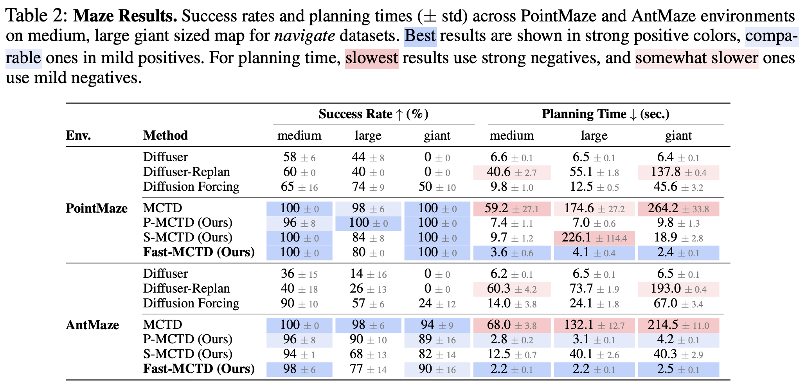
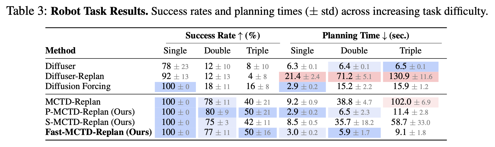
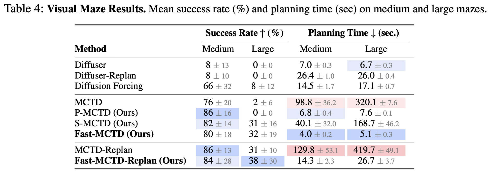

Fast Monte Carlo Tree Diffusion: 100x Speedup via Parallel Sparse Planning

Abstract
Diffusion models have recently emerged as a powerful approach for trajectory planning. However, their inherently non-sequential nature limits their effectiveness in long-horizon reasoning tasks at test time. The recently proposed Monte Carlo Tree Diffusion (MCTD) offers a promising solution by combining diffusion with tree-based search, achieving state-of-the-art performance on complex planning problems. Despite its strengths, our analysis shows that MCTD incurs substantial computational overhead due to the sequential nature of tree search and the cost of iterative denoising. To address this, we propose Fast-MCTD, a more efficient variant that preserves the strengths of MCTD while significantly improving its speed and scalability. Fast-MCTD integrates two techniques: Parallel MCTD, which enables parallel rollouts via delayed tree updates and redundancy-aware selection; and Sparse MCTD, which reduces rollout length through trajectory coarsening. Experiments show that Fast-MCTD achieves up to 100× speedup over standard MCTD while maintaining or improving planning performance. Remarkably, it even outperforms Diffuser in inference speed on some tasks, despite Diffuser requiring no search and yielding weaker solutions. These results position Fast-MCTD as a practical and scalable solution for diffusion-based inference-time reasoning.
Planning Horizon Dilemma
MCTD shows promising results in complex planning tasks by combining tree-structured search (Monte Carlo Tree Search) with diffusion denoising. However, it suffers from inherent computational inefficiency due to the intensive nature of both components. The computational bottlenecks arise from two sources: MCTS fundamentally requires sequential statistics updates after each rollout, preventing parallelization, while the diffusion model demands iterative execution of expensive denoising steps at each node. This overhead becomes particularly problematic in long-horizon tasks—precisely where MCTD excels. As planning horizon increases, MCTD must navigate exponentially expanding search space, leading to prohibitive computational costs. Consider an MCTD tree where each parent has $N_{\text{child}}$ children and $C_{\text{sub}}$ represents the denoising cost per node. For required task depth $\bar{s}$, the total search complexity is: $$ C_{\text{MCTD}} = O(N_{\text{child}}^{\bar{s}} \cdot C_{\text{sub}}). $$ While MCTD's exploration-exploitation balancing reduces actual complexity below this bound, the algorithm remains exponential in planning horizon. This creates the Planning Horizon Dilemma: MCTD becomes increasingly inefficient precisely where it is most effective—long-horizon planning tasks requiring extensive search depth.
Fast-MCTD: Fast Monte Carlo Tree Diffusion
In this work, we addressed the efficiency issue of MCTD in the two aspects: Between-rollout inefficiency and Within-rollout inefficiency.
The inefficiency between rollout is from the sequential statistics updates of MCTS, limiting parallelism, we addressed this by re-designing the MCTD tree search to be parallelizable with Parallel MCTD (P-MCTD).
The inefficiency within rollout is from the iterative denoising process of diffusion model, which is computationally intensive. To optimize the within-rollout inefficiency, we proposed the higher-level planning, Sparse MCTD (S-MCTD).
Parallel MCTD
To design a parallelized version of MCTD, we apply three techniques: Delayed Tree Update, Redundancy-Aware Selection, and Parallel Denoising on Expansion and Simulation. Delayed Tree Update postpones tree updates until $K$ rollouts complete, enabling parallel processing of multiple rollouts. While this causes inefficiency from operating on outdated tree statistics, we empirically find this overhead negligible compared to denoising costs. However, delayed updates alone are insufficient for efficient parallelization due to potential duplicate rollouts. Redundancy-Aware Selection addresses duplicate rollouts by redesigning the node selection policy to account for concurrent rollouts, inspired by Liu et al., 2018 and Chaslot et al., 2008: $$ \pi(i) = \arg\max_{j\in\mathcal{C}(i)}\left(V_j + \beta \sqrt{ \frac{\log (N_i + \hat{N}_i \cdot w)}{N_j + \hat{N}_j \cdot w}}\right), $$ where $\pi(i)$ denotes the node selection policy from node $i$, $\mathcal{C}(i)$ is the child node set, and $V_{i}$, $N_{i}$ represent estimated value and visitation count respectively. The hyperparameter $w$ balances exploration-exploitation for parallel search: $w=0$ reduces to standard MCTD selection, while higher values penalize already-selected nodes in the current batch, encouraging exploration of different tree regions. Additionally, we designed to process the selection sequentially to reduce the possibility of the duplicate rollout. Parallel Denoising on Expansion and Simulation optimizes computational overhead. Unlike standard MCTS, MCTD incurs substantial expansion overhead due to denoising processes. We parallelize denoising by batching rollouts—since subplan lengths vary across rollouts, subplans are zero-padded and packed into single batches, enabling high-throughput parallel GPU execution. The table below shows operation times for each MCTD step on PointMaze Giant tasks.
| MCTD Step | Time (sec.) |
|---|---|
| Selection | 3e-4 (0.05%) |
| Expansion | 0.393 (70.9%) |
| Simulation | 0.161 (29.0%) |
| Backpropagation | 1e-4 (0.02%) |
Sparse MCTD
Through the parallelization of the tree search, we can optimize the overhead on the sequential search. However, another fundamental inefficiency of MCTD is the iterative denoising process of diffusion model, which is computationally intensive. To address this, we proposed the Sparse MCTD (S-MCTD), which reduces the rollout length through trajectory coarsening, $\mathbf{x}'=[x_1, x_{H+1}, x_{2H+1}, $$\dots]$ where $H$ is the coarsening factor. Similar to the parallelism degree, too much coarsening can cause the information loss, we empirically found the optimal coarsening factor $H=5$. Interestingly, this coarsening process is not just improving the efficiency on denoising, but also reducing the search space by reducing the number of subplans as: $$ C_{\text{S-MCTD}} = \mathcal{O}\left(N_{\text{child}}^{S/H} \cdot C_{\text{coarse}}\right), $$ where $C_{\text{coarse}}$ is the denoising cost of the coarse trajectory. We observe that computational efficiency improves exponentially with the interval size $H$.
Experimental Results
We evaluate the performance of Fast-MCTD on a variety of tasks, including long-horizon maze, robot arm manipulation, and partially observable & visual long-horizon maze tasks.
While MCTD shows better performance than other baselines, the required time to generate plans from MCTD is generally much longer than other baselines.
On the other hand, Fast-MCTD shows comparable performances to MCTD while achieving huge speedups.
For instance, for PointMaze and AntMaze Giant tasks, Fast-MCTD achieves 100x and 80x speedup over MCTD while maintaining the similar performance.
Especially, on Visual Maze large tasks, Fast-MCTD outperforms MCTD through the higher-level planning by improving the long-term planning generation quality.



Ablation Study
We conducted an ablation study to understand the contribution of each component of Fast-MCTD.
Conclusion
We introduced Fast Monte Carlo Tree Diffusion (Fast-MCTD), a scalable diffusion-based planning algorithm that resolves the planning horizon dilemma inherent to MCTD. By combining parallelized tree search (P-MCTD) with sparse sub-trajectory abstraction (S-MCTD), Fast-MCTD achieves significant inference-time speedups—up to 100× faster than MCTD in some tasks, while maintaining or exceeding performance across challenging long-horizon tasks. We demonstrated its effectiveness in maze navigation, robotic manipulation, and visual planning benchmarks. These gains are enabled by algorithmic innovations such as search-aware parallel rollouts and coarse-to-fine diffusion over abstract plans. While Fast-MCTD alleviates core efficiency bottlenecks, further improvements may be possible by integrating adaptive sparsity or learning-based guidance selection. Our findings highlight that structured reasoning from test-time scalability and efficient inference process are not mutually exclusive, opening new avenues for fast, deliberative decision-making in high-dimensional domains.
BibTeX
@article{yoon2025fast,
title={Fast Monte Carlo Tree Diffusion: 100x Speedup via Parallel Sparse Planning},
author={Yoon, Jaesik and Cho, Hyeonseo and Bengio, Yoshua and Ahn, Sungjin},
journal={arXiv preprint arXiv:2506.09498},
year={2025}
}